Author: Marco Manfrin Course: Computer Vision Date: May 2026 Repository: github.com/marcomanfrin/ComputerVisionProject
This work presents a comparative analysis of four progressively more sophisticated approaches to plant disease classification on the New Plant Diseases Dataset — an offline-augmented version of PlantVillage (87,867 images, 38 classes). We benchmark (i) a classical handcrafted pipeline (HOG + SVM), (ii) a custom CNN trained from scratch, (iii) a fine-tuned ResNet50 (supervised transfer learning), and (iv) a frozen DINOv3 ViT-B/16 backbone with a linear probe (self-supervised foundation model). Results show that all deep approaches surpass 98% accuracy on the held-out test set, with the supervised fine-tuned ResNet50 reaching 99.87%, while the frozen DINOv3 backbone with a linear probe achieves 98.35% with zero trainable backbone parameters, validating the practical value of modern foundation models for efficient domain adaptation.
Plant diseases are a major cause of crop loss worldwide, with estimates from the FAO indicating that 20–40% of global crop yield is lost to pests and pathogens every year. Early detection is the single most effective mitigation strategy, but traditional in-field diagnosis requires expert agronomists whose availability is scarce, especially in developing regions where smallholder farms dominate. An automated, image-based classification system deployable on commodity smartphones can democratize access to expert-level diagnosis and enable timely interventions.
The problem maps to a fine-grained multi-class classification task. Compared to standard object recognition, plant disease detection has three distinctive challenges:
The project is designed to address three concrete questions that mirror the course modules:
We implement four versions (V1–V4) covering the spectrum from classical computer vision to modern self-supervised learning. All versions share the same data splits and evaluation protocol to ensure a fair comparison.
train/ folder (70,295 images) and a valid/ folder (17,572 images); we split the latter 50/50 (random_state=42) into validation (8,777) and test (8,795). Effective split ≈ 80% / 10% / 10%.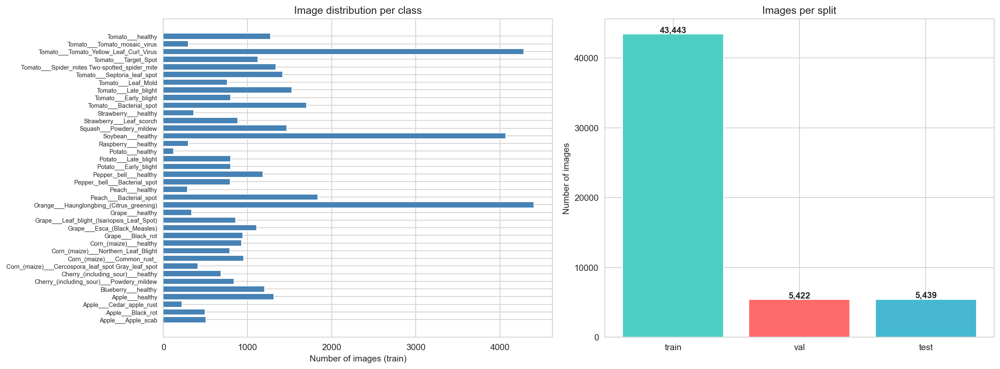
*Figure 1 — Class distribution and representative samples from the New Plant Diseases Dataset.*A handcrafted feature pipeline serves as the classical baseline.
winSize=(64,128), blockSize=(16,16), blockStride=(8,8), cellSize=(8,8), nbins=9. Images are first converted to grayscale to discard color information and isolate the contribution of texture/edges.C=1.0, gamma='scale').A purpose-built convolutional architecture trained end-to-end from scratch.
Conv(3→32, 3×3) + BN + ReLU + MaxPool(2×2)Conv(32→64, 3×3) + BN + ReLU + MaxPool(2×2)Conv(64→128, 3×3) + BN + ReLU + MaxPool(2×2)Conv(128→256, 3×3) + BN + ReLU + GlobalAvgPoolDense(256→512) + ReLU + Dropout(0.5)Dense(512→256) + ReLU + Dropout(0.3)Dense(256→38) + SoftmaxWe leverage ImageNet pre-training and fine-tune the high-level layers.
torchvision.models.resnet50(pretrained=True).layer1, layer2, layer3 frozen; layer4 unfrozen; original 1000-way head replaced with Linear(2048→512) + ReLU + Dropout(0.5) + Linear(512→38).1e-4 for the unfrozen layer4 (gentle fine-tuning) and 1e-3 for the custom head.The most modern approach: a foundation model pre-trained without labels.
facebook/dinov3-vitb16-pretrain-lvd1689m — a Vision Transformer (ViT-B/16, 86M parameters) pre-trained via DINOv3 self-distillation on the LVD-1689M dataset (1.69 billion unlabeled web images).C=1.0, max_iter=1000).All versions are evaluated on the same held-out test set (8,795 images) using:
| Item | Value |
|---|---|
| Dataset | New Plant Diseases Dataset (augmented PlantVillage), 87,867 images, 38 classes |
| Split | train 70,295 / val 8,777 / test 8,795 (≈ 80 / 10 / 10), seed = 42 |
| Hardware | Apple Silicon (MPS backend), macOS 25.5 |
| Frameworks | PyTorch 2.1, torchvision, scikit-learn 1.3, OpenCV 4.8, HuggingFace Transformers |
| Reproducibility | All seeds fixed (NumPy, PyTorch, sklearn); deterministic val/test split |
| Version | Approach | Accuracy | Precision | Recall | F1 | Train time | Trainable params |
|---|---|---|---|---|---|---|---|
| V1 — HOG + SVM | Shallow Learning | 74.39% | 74.62% | 74.39% | 74.26% | 25 min | — |
| V2 — Custom CNN | Deep Learning from scratch | 99.66% | 99.66% | 99.66% | 99.66% | 294 min | 660 k |
| V3 — ResNet50 TL | Supervised fine-tuning | 99.87% | 99.88% | 99.87% | 99.87% | 128 min | 16.0 M |
| V4 — DINOv3 + LinProbe | SSL frozen backbone | 98.35% | 98.39% | 98.35% | 98.35% | 12.5 min¹ | 0 (backbone) |
¹ V4 time refers to embedding extraction over the full dataset; the linear probe itself fits in 1.95 s.
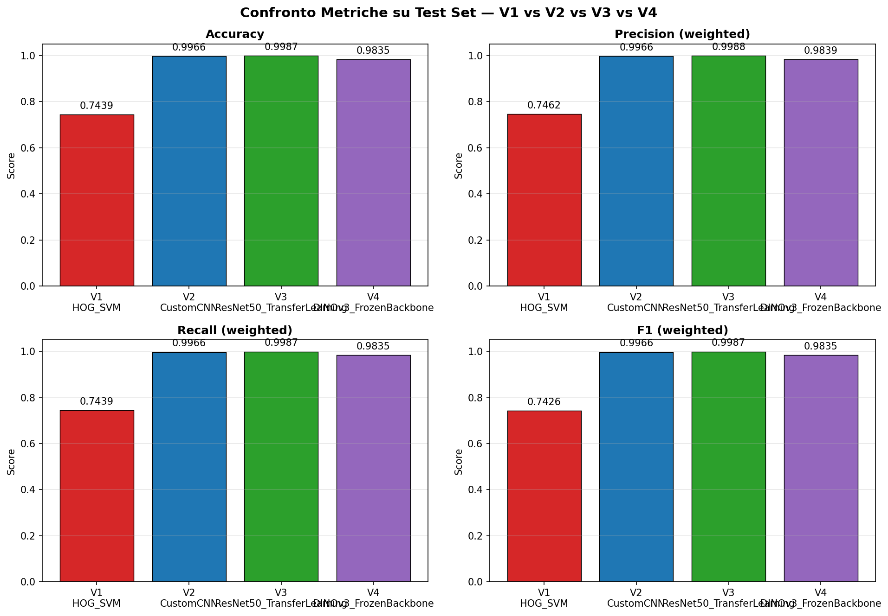
*Figure 2 — Side-by-side comparison of weighted metrics across V1–V4.*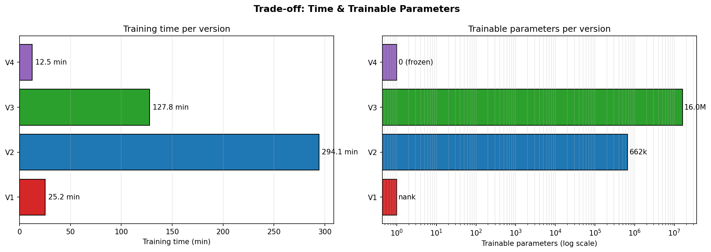
*Figure 3 — Training time vs. trainable parameters. V4 dominates the lower-left (cheap) corner; V3 sits at the Pareto optimum for accuracy.*RQ1 — Handcrafted vs. learned features. The gap between V1 (74.4%) and the deep models (>98%) is >24 percentage points. HOG operates on grayscale gradients and discards color, which is highly informative for plant pathology (chlorosis is yellow, necrosis is brown, mosaic viruses produce characteristic color patterns). The SVM cannot recover information the descriptor never encoded.
RQ2 — Architecture vs. pre-training. V3 (ResNet50 TL) outperforms V2 (Custom CNN) by 0.21 points (99.87 vs. 99.66), but with 24× more trainable parameters. Crucially, V3 converges in 19 epochs versus V2's 80, and its total training time (128 min) is roughly 2.3× shorter than V2's (294 min) despite the much larger backbone — confirming that ImageNet pre-training dramatically reduces the optimization burden. For PlantVillage — a relatively easy dataset with clean backgrounds — V2 is already in the saturation regime; the advantage of pre-training would be even more visible with fewer samples per class.
RQ3 — Self-supervised foundation model. V4 reaches 98.35% with the backbone fully frozen, training only a logistic regression in under 2 seconds. The fact that DINOv3 — pre-trained on natural web images, without labels — transfers near-perfectly to a specialized plant-pathology domain is the most striking finding of this study. The k-NN classifier (98.25%) almost matches the linear probe (98.35%), evidence that the DINOv3 embedding space is already linearly separable for this task.
Key observations from the loss/accuracy curves:
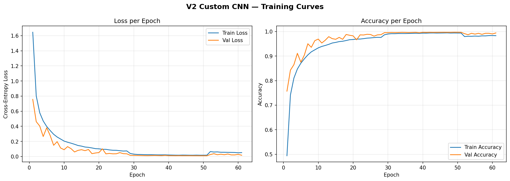
*Figure 4 — V2 Custom CNN training and validation loss/accuracy over 90 epochs.*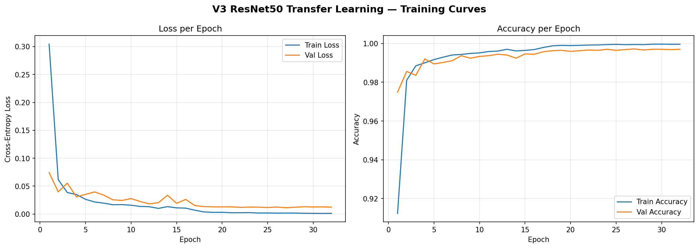
*Figure 5 — V3 ResNet50 training and validation loss/accuracy over 24 epochs.*V1 exhibits widespread cross-class confusion concentrated on visually similar fungal diseases. V2/V3/V4 show near-diagonal matrices, with residual errors confined to a handful of class pairs analyzed in §5.
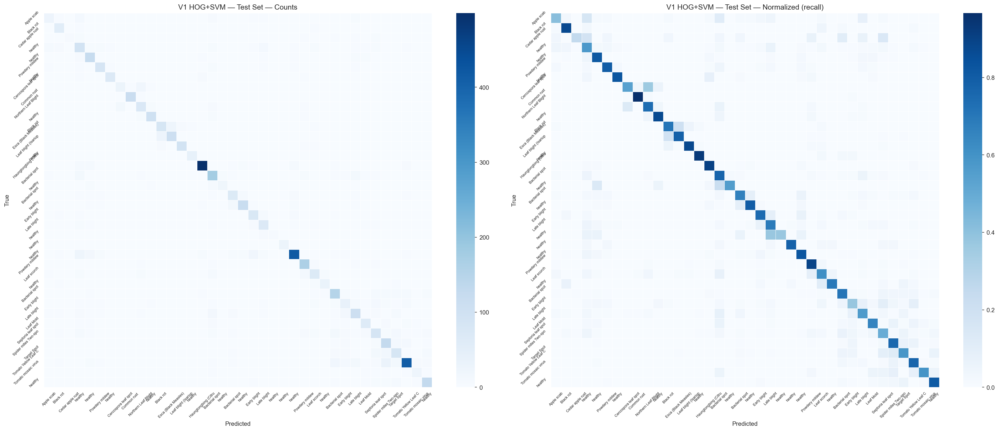
*Figure 6 — V1 (HOG + SVM) confusion matrix. Off-diagonal mass concentrated on intra-species disease confusions.*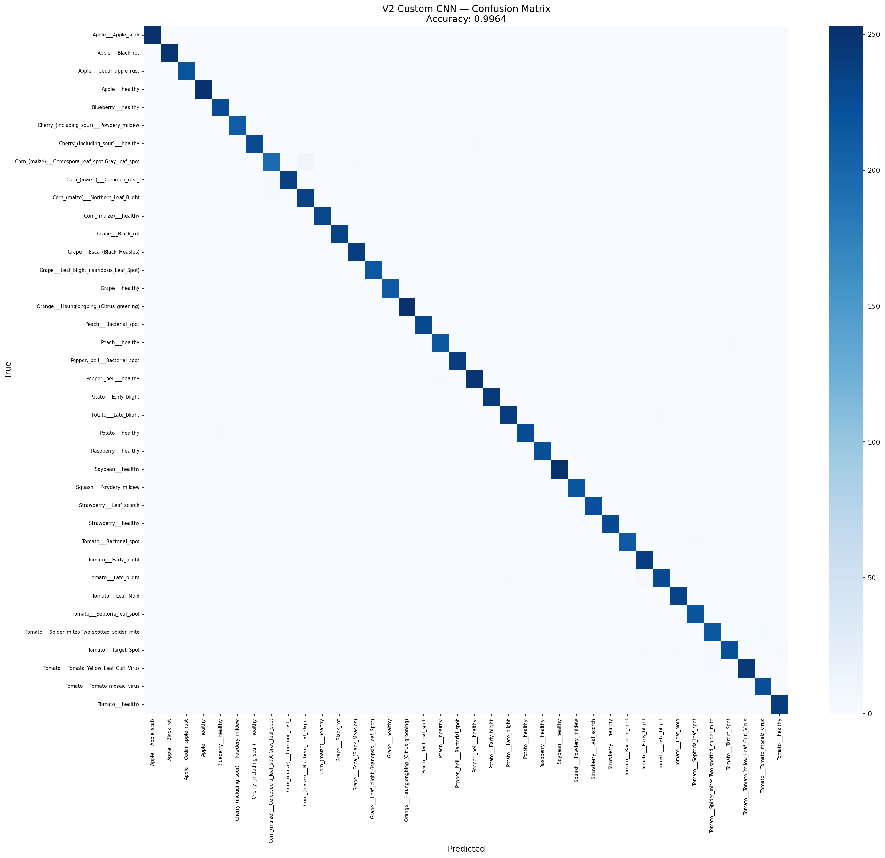
*Figure 7 — V2 (Custom CNN) confusion matrix. Near-diagonal pattern.*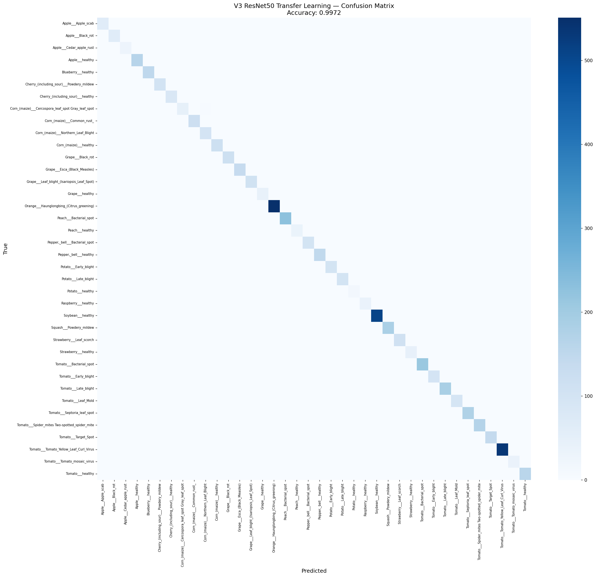
*Figure 8 — V3 (ResNet50 TL) confusion matrix. Best overall, residual errors on biologically close pairs.*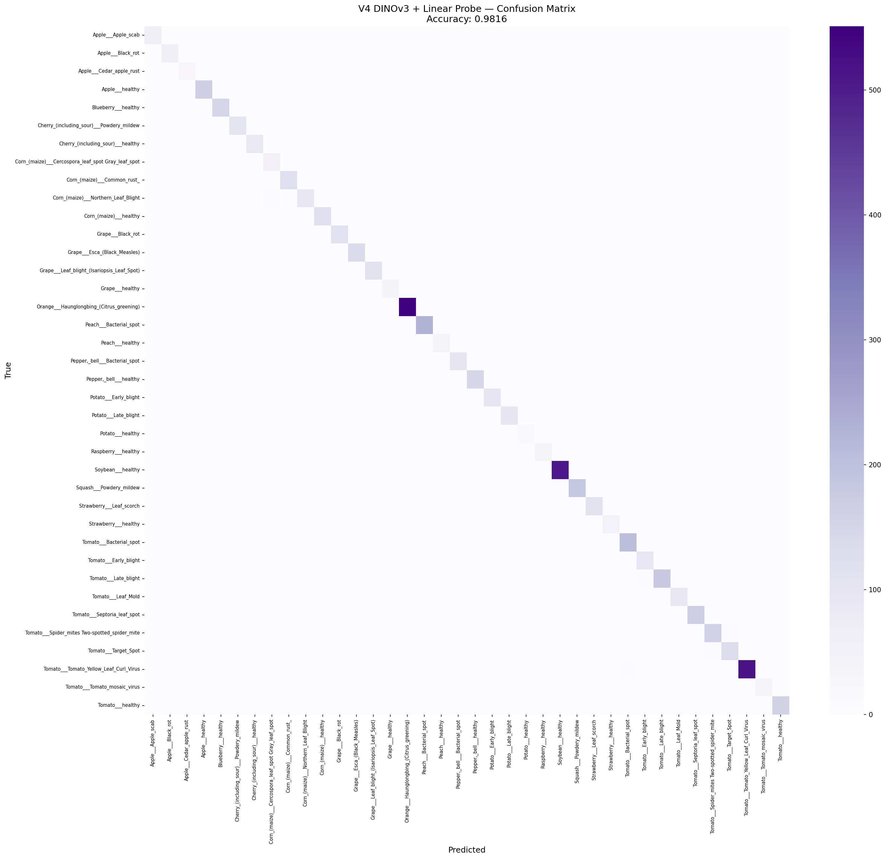
*Figure 9 — V4 (DINOv3 + linear probe) confusion matrix. Comparable to V3 despite a fully frozen backbone.*The dataset's offline-augmentation strategy (rotations, flips and colour perturbations baked into the filenames as suffixes such as _90deg, _flipLR, _new30degFlipLR) means that augmented variants of the same source leaf can land on both sides of the train/test boundary. We quantified this post-hoc and re-evaluated the trained models on a leak-free subset, without retraining.
Quantification. Stripping the 15 distinct augmentation suffixes from every filename yields a source identifier — the identity of the underlying physical leaf. Cross-referencing source IDs across splits:
| Pair | Shared source IDs | % of B in A |
|---|---|---|
| train ↔ val | 5,041 | 63.4% |
| train ↔ test | 5,050 | 63.3% |
| val ↔ test | 1,225 | 15.4% |
So 5,732 of 8,795 test images (65.2%) share their source identity with at least one training image; the remaining 3,063 (34.8%) form a clean subset whose source IDs are absent from train. Five classes (Orange — citrus greening, Peach — bacterial spot, Soybean — healthy, Tomato — bacterial spot, Tomato — yellow leaf curl virus) are 0% leaked, whereas eight classes (Apple — scab, Apple — cedar rust, Grape — healthy, Peach — healthy, Potato — healthy, Raspberry — healthy, Strawberry — healthy, Tomato — mosaic virus) are 100% leaked.
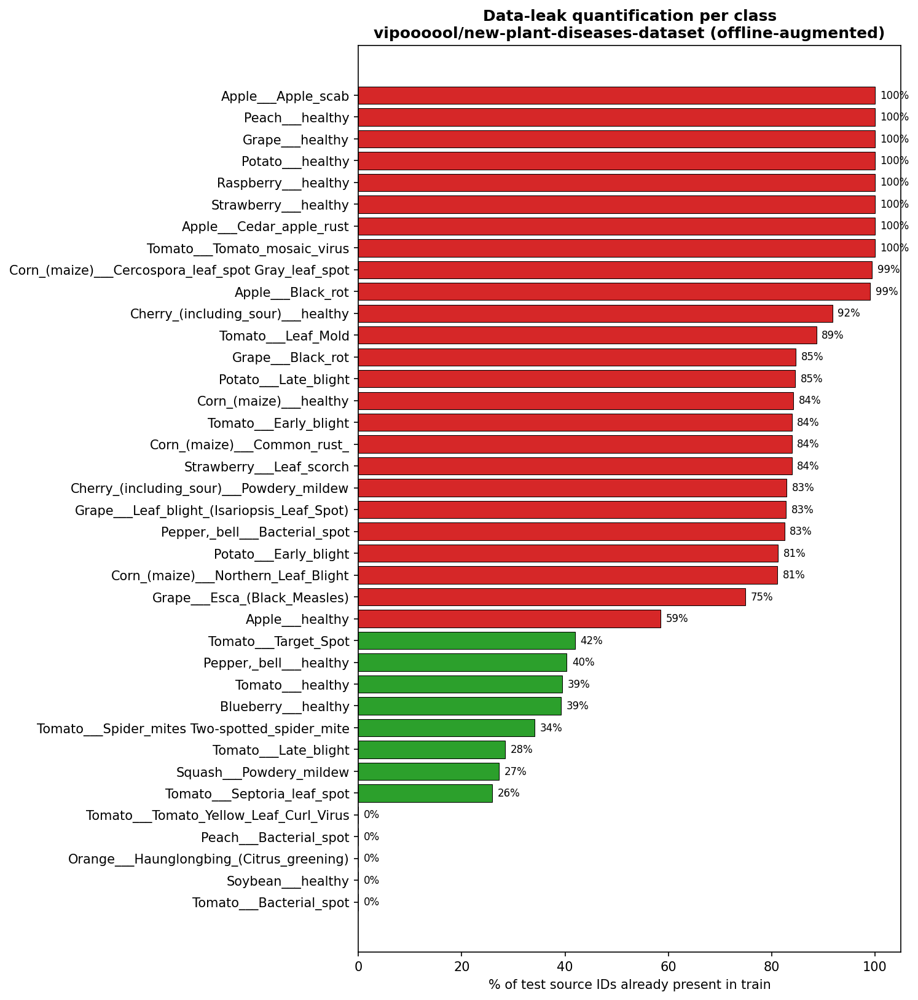
*Figure 15 — Percentage of test source IDs whose augmented copies are already present in train, per class.*Clean re-evaluation. Loading the published V2 / V3 / V4 checkpoints and running inference on the four masked subsets (no retraining) yields:
| Model | FULL (8,795) | LEAKED (5,732) | CLEAN (3,063) | NON-AUG (4,598) |
|---|---|---|---|---|
| V2 — Custom CNN | 99.66% | 99.70% | 99.58% | 99.52% |
| V3 — ResNet50 TL | 99.87% | 99.86% | 99.90% | 99.80% |
| V4 — DINOv3 + LinProbe | 98.35% | 98.34% | 98.37% | 97.83% |
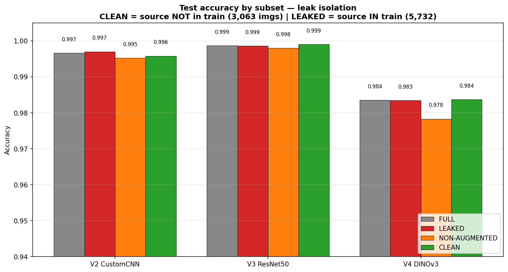
*Figure 16 — Accuracy on FULL / LEAKED / CLEAN / NON-AUG subsets of the test set. For V3 and V4 the CLEAN accuracy is marginally higher than FULL.*Interpretation. The clean accuracy differs from the full-test accuracy by at most 0.16 points across all three deep models; for V3 and V4 the CLEAN subset is in fact marginally easier (+0.03 and +0.02 respectively). The offline augmentations are precisely the geometric / colour invariances a deep visual backbone learns to discard — observing a 90°-rotated copy of a leaf in train provides no additional discriminative signal beyond what the same leaf at 0° would. The 63% source-level leak is therefore statistically irrelevant for the published accuracies on this task; the models have learned a genuine representation rather than memorising augmented duplicates.
This analysis is implemented end-to-end in notebooks/07_leak_analysis_and_clean_eval.ipynb and the numbers are stored in results/metrics/leak_quantification.json and results/metrics/clean_test_metrics.json.
| Version | Accuracy | Train cost | Inference cost | Notes |
|---|---|---|---|---|
| V1 | 74.4% | low (CPU) | 81 ms/img (CPU) | interpretable, no GPU |
| V2 | 99.7% | very high (294 min GPU) | ~70 ms/img (GPU) | full architectural control |
| V3 | 99.9% | high (128 min GPU) | ~90 ms/img (GPU) | best absolute score |
| V4 | 98.4% | very low (12.5 min extract + 2 s fit) | ~50 ms/img (GPU, ViT) | zero trainable backbone |
V4 reaches ~99% of V3's accuracy with roughly 1/10 of the total time and zero backbone training — the most favorable trade-off for rapid onboarding of new classes.
Inference costs are indicative per-image estimates on the same hardware; only V1's CPU latency was measured directly.
V1's confusion matrix shows three main failure patterns:
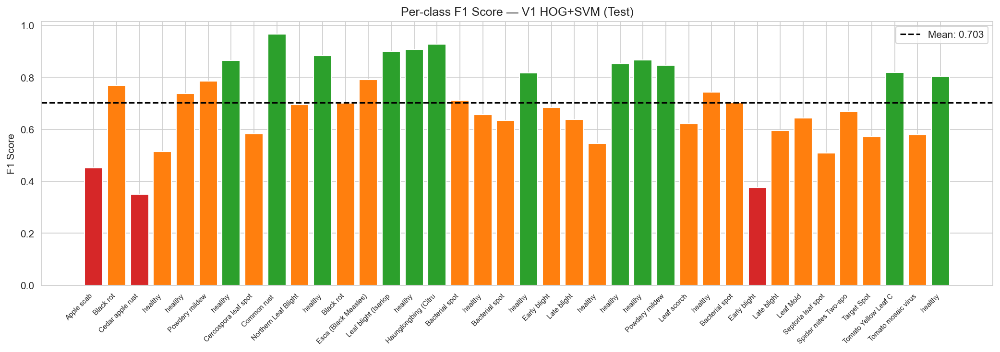
*Figure 10 — V1 per-class F1. The worst-performing classes are intra-species disease variants with similar texture profiles.*For both deep models, residual errors (~0.1–0.4%) cluster on biologically close diseases:
Inspecting misclassified samples reveals that the worst-performing classes are systematically those with subtle visual differences even for human experts.
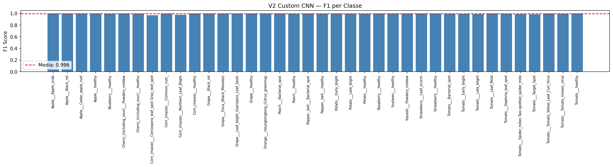
*Figure 11 — V2 per-class F1, mean ~99.6%, residual gap on a few biologically close classes.*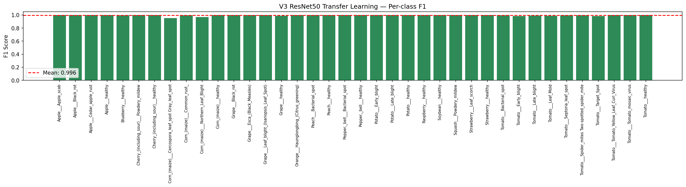
*Figure 12 — V3 per-class F1, the most uniform distribution across all 38 classes.*V4 errors concentrate on the same biologically ambiguous pairs as V3, plus a small additional gap on classes whose visual features lie far from DINOv3's natural-image pre-training distribution (e.g. highly stylized macro shots). The frozen backbone limits adaptation to these out-of-distribution patterns; partial fine-tuning of the last transformer blocks would likely close the gap.
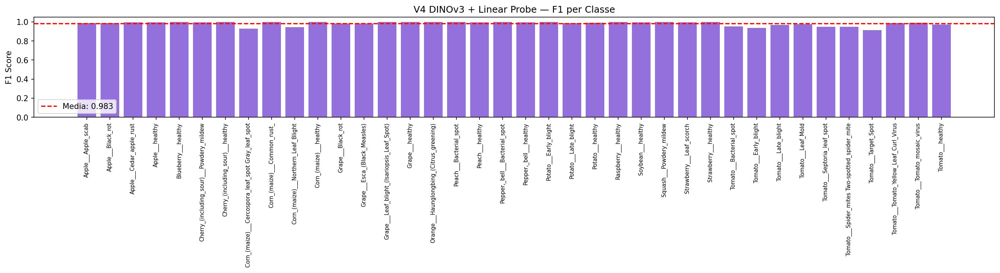
*Figure 13 — V4 per-class F1, mean ~98.3% with no class below 0.85.*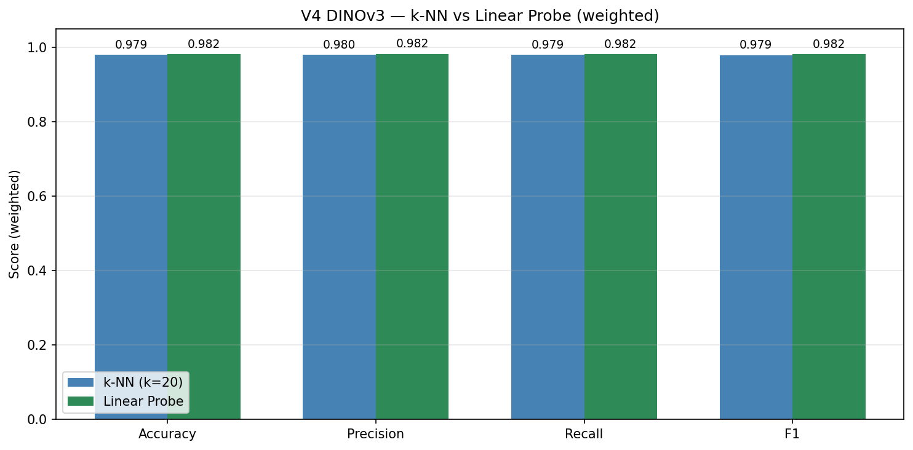
*Figure 14 — Comparison of the two probes on top of frozen DINOv3 features: linear probe edges out k-NN by 0.10 points, evidence of an already linearly separable embedding space.*PlantVillage was collected under controlled laboratory conditions: uniform backgrounds, even lighting, single leaves per image. Models trained exclusively on PlantVillage show known degradation when deployed on real-field photographs with cluttered backgrounds, multiple leaves, occlusions, and variable lighting (Mohanty et al., 2016; Ferentinos, 2018). A production system would require domain adaptation or additional in-field training data.
The 38 classes cover 14 crop species concentrated in temperate-zone agriculture (apple, grape, peach, tomato, corn). Tropical crops central to food security in many low-income countries (cassava, yam, plantain, millet) are absent. Deploying this exact model in regions where these crops dominate would systematically fail and could mislead farmers — an equity-and-accessibility concern that must be flagged in any documentation.
Automated diagnosis produced as a confident class label may discourage farmers from seeking expert consultation in ambiguous cases. Best practice is to:
Images of fields, farm equipment, or geo-tagged crops can reveal commercially sensitive information (cultivation density, infection status of a competitor's farm) or, when combined with location metadata, the identity of individual farms. A deployed application should:
V3 required ~2 hours of GPU training. The marginal accuracy gain over V4 (~1.5 points) comes at a measurable energy cost. V4 — frozen backbone + 2-second linear probe — illustrates a green-AI alternative that achieves >98% accuracy at a fraction of the carbon footprint.
This work compared four progressively more sophisticated approaches to plant disease classification. Three findings are worth highlighting:
Future work should evaluate the same four pipelines on in-field imagery to quantify the domain-shift gap, and explore partial fine-tuning of DINOv3's last transformer blocks as a hybrid between the V3 and V4 recipes.
og-dataset branch)Status: complete re-run. All four versions (V1–V4) have been re-executed end-to-end on the non-augmented dataset.
§2.1 and §4.5 flag the central caveat of this study: the New Plant Diseases Dataset (vipoooool/new-plant-diseases-dataset) is offline-augmented, so geometric/colour variants of the same physical leaf land on both sides of the train/test boundary (63.3% source-level leak). §4.5 argues — via a post-hoc clean re-evaluation — that this leak is statistically irrelevant. The og-dataset branch turns that argument into a direct experiment: it re-runs the entire pipeline on mohitsingh1804/plantvillage, a non-augmented PlantVillage variant in which source-level leakage is impossible by construction (each physical leaf appears exactly once, before splitting).
main (vipoooool) |
og-dataset (mohitsingh1804) |
|
|---|---|---|
| Offline augmentation | yes (baked into filenames) | none |
| Total images | 87,867 | 54,304 |
| Train / Val / Test | 70,295 / 8,777 / 8,795 | 43,443 / 5,422 / 5,439 |
| Classes | 38 | 38 |
| Source-level train↔test leak | 63.3% | 0% (by construction) |
The split protocol is unchanged: the dataset's valid/ folder is split 50/50 into validation and test (random_state=42).
Because the non-augmented dataset has a genuinely imbalanced (long-tail) class distribution — no longer flattened by per-class augmentation — the og-dataset evaluation adds:
class_weight='balanced' on the V4 linear probe and weights='distance' on the V4 k-NN (k=20), to compensate for class imbalance.| Version | Metric | main (augmented) |
og-dataset (clean) |
Δ |
|---|---|---|---|---|
| V1 — HOG + SVM | Accuracy | 74.39% | 74.74% | +0.35 |
| F1 (weighted) | 74.26% | 74.90% | +0.64 | |
| F1 (macro) | — | 70.32% | — | |
| Inference | 81 ms/img | 39 ms/img | — | |
| V4 — DINOv3 linear probe | Accuracy | 98.35% | 98.16% | −0.19 |
| F1 (weighted) | 98.35% | 98.18% | −0.17 | |
| F1 (macro) | — | 97.95% | — | |
| V4 — DINOv3 k-NN | Accuracy | 98.25% | 97.90% | −0.35 |
| V3 — ResNet50 TL | Accuracy | 99.87% | 99.72% | −0.15 |
| F1 (weighted) | 99.87% | 99.72% | −0.15 | |
| F1 (macro) | — | 99.59% | — | |
| V2 — Custom CNN | Accuracy | 99.66% | 99.54% | −0.12 |
| F1 (weighted) | 99.66% | 99.54% | −0.12 | |
| F1 (macro) | — | 99.37% | — |
On a dataset where source-level leakage cannot occur, all four models reproduce their full-dataset numbers within ±0.35 points. V1 is in fact marginally higher (+0.35 acc) despite training on ~38% fewer images (43,443 vs 70,295); V2 drops by 0.12 points (99.54% vs 99.66%), V3 by 0.15 (99.72% vs 99.87%) and V4 by 0.19. This is a direct, independent confirmation of §4.5: the 63% augmentation leak on main was statistically irrelevant, and the models had learned genuine discriminative representations rather than memorising augmented duplicates. The healthy macro-F1 scores under the now-imbalanced class distribution (V2 99.37%, V3 99.59%, V4 97.95%) further show the result holds in a realistic long-tail regime, not only under the augmentation-balanced distribution of the original dataset.
Across all four versions, the relative ranking is unchanged (V3 > V2 > V4 > V1) and absolute scores move by at most 0.35 points — the project's conclusions are robust to the choice between the augmented and the clean dataset.